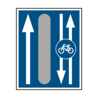

- 202. Mi a jelzőtábla jelentése? #703802
- ’Kijelölt gyalogos-átkelőhely’
- ’Mozgólépcső’
- ’Gyalogos alul- vagy felüljáró’
- 203. Milyen távolságra kell a kijelölt gyalogos-átkelőhelyre számítania közúti jelzőtábla után? #703803
- Közvetlenül a közúti jelzőtábla után.
- A közúti jelzőtábla után 25 méterre.
- Lakott területen 50-100 méterre, lakott területen kívül 150-250 méterre a közúti jelzőtábla után.

- 204. Mit jelez ez a jelzőtábla? #703804
- A besorolás rendjét az útkereszteződés előtt.
- Kapaszkodósávot.
- Párhuzamos közlekedésű utat.

- 205. Mi a jelzőtábla jelentése? #703911
- ’Autóbusz-megállóhely’
- ’Trolibusz-megállóhely’
- ’Villamos-megállóhely’

- 206. Mi a jelzőtábla jelentése? #703912
- ’Trolibusz-megállóhely’
- ’Autóbusz-megállóhely’
- ’Villamos-megállóhely’

- 207. Mit jelent a képen látható közúti jelzés? #703913
- ’Kapaszkodósáv’
- ’A besorolás rendje’ a következő útkereszteződésben.
- ’Lassítósáv’

- 208. Mi a jelzőtábla jelentése? #703952
- ’Út melletti kerékpárút’
- ’Kerékpársáv’
- ’Kerékpáros közvetett kapcsolat’

- 209. Mi a jelzőtábla jelentése? #703953
- ’Kerékpáros közvetett kapcsolat’
- ’Előretolt kerékpáros felállóhely’
- ’Kerékpárút egyenesen és balra is’

- 210. Hol közlekedhet motorkerékpárral e jelzőtábla után? #703954
- Csak a bal oldali fehér nyíllal jelzett úttesten.
- A jobb oldali kerékpárost és nyilakat ábrázoló kerékpárúton.
- Akár az úttesten, akár a kerékpárúton.

- 211. Mi a jelzőtábla jelentése? #703955
- ’Kerékpárosok által is használható autóbusz-forgalmi sáv’
- ’Autóbusz-megállóhely, ahol a kerékpáros is megállhat’
- ’Autóbusszal és kerékpárral a jobb szélső forgalmi sávra ráhajtani tilos’

- 212. Hogyan nevezzük ezt a közúti jelzőtáblát? #703981
- ’Kerülő útirányt jelző tábla’
- ’Kötelező haladási irány’
- ’Besorolás rendjét jelző tábla’

- 213. A jelzőtábla alatt nincs kiegészítő tábla. Közlekedhet-e a kerékpáros a jelölt iránnyal szemben? #715033
- Nem.
- Igen, de csak az úttest bal szélén.
- Igen, bárhol.

- 214. Mi a jelzőtábla jelentése? #715037
- Zsákutca’.
- Terelőút’.
- Egyirányú forgalmú út’.

- 215. Szabályos-e, ha járművével behajt abba az utcába, melynek elején ezt a közúti jelzőtáblát helyezték el? #715038
- Igen, bármely járművel szabályos a behajtás.
- Nem.
- Igen, de csak kerékpárral való behajtáskor.

- 216. Mi a jelzőtábla jelentése? #715039
- Autóbusz-forgalmi sáv’.
- Autóbusz-megállóhely’.
- Autóbusszal behajtani tilos’.

- 217. Mi a jelzőtábla jelentése? #715040
- Kapaszkodósáv vége’.
- Gyorsítósáv vége’.
- Párhuzamos közlekedésre alkalmas út vége’.

- 218. Mi a jelzőtábla jelentése? #715042
- Kerékpársáv’.
- Kerékpáros nyom’.
- Kerékpárút’.

- 219. Mit jelent az ábrán látható közúti jelzőtáblán szereplő 60-as számérték? #715056
- 60 km/h-nál kisebb sebességgel haladó jármű a kapaszkodósávot köteles igénybe venni.
- A következő útkereszteződésben ez a sáv a 60-as úton folytatódik.
- 60 méternél kisebb követési távolságot tartani nem szabad.

- 220. Mi a jelzőtábla jelentése? #715057
- Lakott terület kezdete’.
- Útvonal-megerősítő tábla’.
- Műemlékek’.

- 221. Találkozhat-e lakott területen kapaszkodósáv jelzőtáblával? #715059
- Igen.
- Nem.